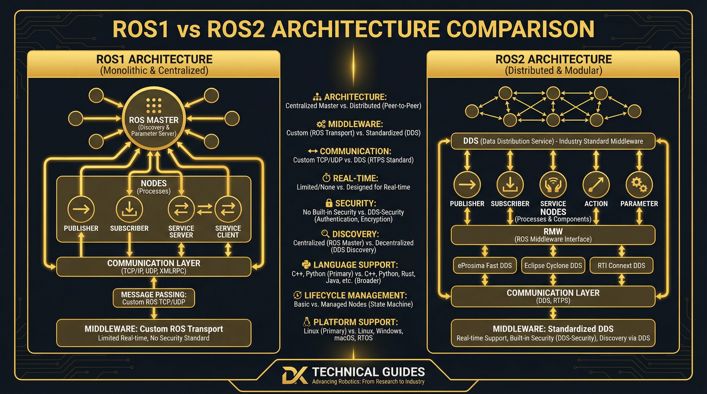

ROS1 vs ROS2: Architecture Transformation
ROS1 Limitations
- Transport: TCPROS/UDPROS only, limited reliability
- Real-time: No native RTOS support
- API Stability: Core API changes between versions
- Platform: Linux only, limited portability
- Security: No built-in security mechanisms
- Scalability: Single master architecture bottleneck
ROS2 Improvements
- Transport: DDS-based, enterprise-grade middleware
- Real-time: Native RTOS and hard real-time support
- API Stability: Stable API since ROS2 Crystal
- Platform: Multi-platform: Linux, Windows, macOS
- Security: DDS-Security plugin architecture
- Scalability: Decentralized, distributed architecture
